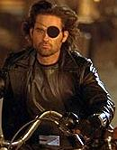

Contents | Features | Reviews | News | Archives | Store |
 |
|
| Movie Credits | Buy It! |
Escape from L.A.
Review by Carrie Gorringe
|  | Directed by John Carpenter. Starring Kurt Russell, Screenplay by John Carpenter, |
The first indication of trouble in Escape From L.A. comes very near the beginning, when the assistant to Commander Malloy (Keach) refers to the just-reincarcerated Snake Plissken (Russell) as "so retro." She is closer to the truth of the matter than she realizes, because everything in this Escape is retro to a rather uncomfortable degree; take away the fancier special effects, cast changes and a change in locale, and the new film is an exact replica of its predecessor, warts and all. Bad ol’ Plissken has to go back into another closed city to clean up the mess of an incompetent political administration with yet another risk to his life if he doesn’t succeed.
This is not to say, however, that the original Escape From New York was an inferior product, or that the act of near-duplication should have resulted in nothing more than rank imitation. For all of its faults -- including a narrative structure that seemed at times to progress at the speed of your average snail -- that film was never without a certain vulgar charm and fascination, if for no other reason than because of the obvious enthusiasm that lay underneath the surface, an enthusiasm inspired in part by having to improvise within the constraints of a five-million-dollar budget -- small change even in 1981. Consequently, Escape From New York was also a fresh-looking film. A year before Blade Runner brought the flashy, ground-breaking special effects and a "noir" patina to the post-apocalyptic, dystopian sci-fi film genre, Escape From New York established the basic ground rules, borrowing vigorously from traditional epic narratives and westerns, notably in the figure of a lone hero, with skills superior to the rest, who accomplishes his mission, then goes on as before. There was a postmodern twist to the tale: the hero’s effect is necessarily narrow, with no changes to the social order, and no improvement in the hero’s post-mission status. Plissken was compelled to complete this mission to buy back his life, not to enhance it. Other than regaining his life, the prospect of winning amounted at times to little more than a zero-sum game, and Plissken’s underdog status gave the film an overall poignancy; he was a superior individual placed in the service of the mediocre and malicious, with wildly unkempt tresses and a loathing of authority that emanated from every gruff syllable he uttered (and there were few), Plissken was the embodiment of the Romantic radical who had successfully completed his own psychological withdrawal from a corrupt society, but who couldn’t quite escape society’s need to keep him under control. Under the circumstances, identifying with Plissken, and Russell’s powerful, yet low-key, portrayal of the character, was easy on both the eyes and the mind.
But Carpenter was also able to make the film relevant by adding topical material. By his own admission, Carpenter was strongly influenced by a cynicism brought about in the wake of Watergate, so there was always a strong political undercurrent in the narrative of the first Escape, yet a belief in how relevant politics is, albeit in a simplistically pessimistic fashion, along the Trotskyesque lines of history concerning itself with you regardless of your own concerns about history. A fear of a totalitarian state, and its attendant evils, was always evident.
And the political undercurrent is sustained in Escape From L.A., but in a different form. The new model for the dystopian state that Carpenter fears most is made more apparent, to the point of embarrassment. A United States Police Force has been instituted; their insignia -- an Imperial eagle -- and their all-black uniforms evoke memories of an omniscient, omnipotent, ruthless force controlled by a cruel paranoiac in thrall to a morally-twisted ideology (no points for any conclusions drawn concerning the little Austrian corporal with the funny mustache). From this, it isn’t much of a stretch to see that screenwriters Carpenter, Hill and Russell might be attempting to formulate a cause-and-effect chain based on (a faulty) historical analogy, one which can be extended to American political life: protection of freedom can not be half-hearted, especially since there has been "conclusive" evidence (courtesy of the hangover obsession with Richard Nixon) that anti-democratic forces can emerge anywhere at any time, even in the epitome of democratic principles (never mind that the safeguards built in by the Founding Fathers worked effectively in removing Nixon from office after the evidence against him became overwhelming -- safeguards that never existed in the Weimar Republic).
To this end, the screenwriters have given us the "logical" end product of the increasing political influence of the religious right, a president whose mindset is only one step away from the pale-blue-leisure-suit, white-patent-loafer, and Brylcreem cliche that the screenwriters unquestioningly embrace as the complete embodiment of the far-right mentality. The obviously psychotic President (Robertson) demands that his only child be assassinated by Plissken because she has been the lover of the radical (Corraface) who has taken over LA. As a "soiled" product, she is now unworthy of being alive. While not discounting the obvious threat to American liberties that the so-called religious right poses with its intolerance of other viewpoints and its rigid ideology, it can only be noted that this extreme stereotype is not unlike the stereotype that right-wingers had about "Commies" in the 1950s, and it bears about as much relationship to reality and historical fact as the latter ever did; its utility in fighting the "evils" of intolerance is grimly self-evident. No doubt Hollywood is finding the attacks by Bob Dole and others on the presumed lack of morality in American films hitting a little close to home on certain issues, but hysteria is hardly an effective response. With their clouded vision, Carpenter et al. even manage to confuse their analogies even further by depicting the LA under assault from without as a first-rate den of iniquity, created by those self-same forces, one which the inmates prove to be all-too-adept at adapting to terrorizing effect. If this is an attempt to depict LA (and, by extension, Hollywood) as being under some sort of moral siege, then they are treading on very thin semantic ice, a patch of which threatens to break apart right underneath them. Welcome to an inadvertently-engineered zero-sum game; it renders the political subtexts invalid and consequently, this film is more cartoonish than the original.
Despite the increase in budget, more can quite certainly be seen as less in the case of Escape from L.A. Leather suits and special effects do not an improved film make. Some of the effects-heavy sequences, such as one in which Russell has to surf his way ahead of the bad guys, are simply so poorly executed that they are laughable. Not so the performances given by most of the cast. It’s wonderful to know that Russell’s Snake Plissken hasn’t changed at all; the character is still so strong and (mostly) silent that he threatens to make characters in a Sergio Leone film look positively verbose by comparison. Other notables include Buscemi, as Plissken’s fair-weather assistant; he seems to be doing a first-rate job at creating fifth-rate slimeballs (he was last seen in Fargo as one of the incompetent kidnappers) and makes Eddie one of the bright points of this film, as is Fonda’s wry semi-reprisal of his Easy Rider role as a long-gone hippie. But the real standout is Grier, doing a brilliant turn as an old accomplice of Plissken’s. Not so well-served is Keach, whose wooden performance in the role originated by the late Lee Van Cleef only makes the absence of the latter more obvious. Robertson’s hateful hysterics are simply ridiculous. These shortcomings notwithstanding, it’s a tribute to Carpenter’s gifts as a director, as well as to actors like Fonda and Grier, that their performances in this film are good enough to erase all memories of their rather intermittent careers. If only Escape From L.A. were as consistent in quality after its own long absence, the final product would not be as much of a disappointment.
Contents | Features | Reviews | News | Archives | Store
Copyright © 1999 by Nitrate Productions, Inc. All Rights Reserved.